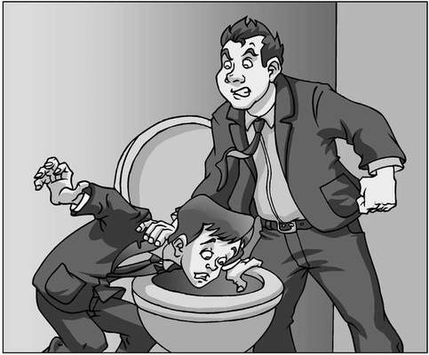
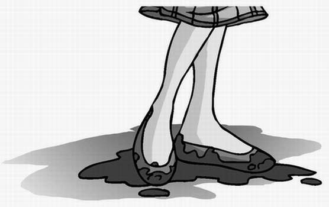

‘No, I can’t fill in the remaining three wives of Henry the Eighth myself!’ roared Gordon as he pushed Alexander’s head into the toilet bowl and flushed for the second time. ‘I want the headmaster’s son to do it for me!’
James Simpson leapt forwards and managed to grab a handful of the bully’s shirt before the heel of a hand pushed into his face and sent him sprawling across the greasy floor of the boys’ toilets. Lenny Maxwell dashed over to help him up.
‘We have to do something!’ hissed James, rubbing his bruised nose. ‘If Mr Tick gets wind that we were in here when this happened to his son, we’ll be in detention for the rest of our natural lives.’
Lenny nodded. ‘Right!’ he said, more to himself than to anyone else. ‘Here I go, doing something! I’m going to do something!’

Alexander’s head appeared from the toilet bowl after his third flushing. ‘Step in any time you want, boys!’ he cried out.
Lenny took a cautious pace towards the bully, and immediately pulled back.
‘What’s wrong?’ asked James.
‘A plan,’ mumbled Lenny, ‘I need a plan.’
Alexander came up for the fourth time. ‘You don’t need a plan!’ he screamed. ‘Just do something!’
Lenny cracked his neck from side to side as James busily rubbed his shoulders. ‘You’re a bully-fighting machine!’ James told him. ‘A giant of a man! You’re a contender!’
‘A contender!’ repeated the giant of a man.
Alexander reappeared briefly. ‘In your own time, Lenny. Don’t mind me!’
Lenny took a deep breath and drew himself up to his full 1.7-metre height. He clamped a hand on Gordon’s chest and spun him round.
‘What?’ the bully spat, his nose just centimetres from Lenny’s chin.
‘Leave him alone, Carver,’ said Lenny, as calmly as he could. He gripped the bully’s jumper even tighter in an attempt to disguise his trembling hand. ‘He’s already done your maths and science homework this week. I’d have thought even a numpty like you could look up a little bit of history and copy it out for himself.’
The expression that flooded Gordon ‘The Gorilla’ Carver’s face was something Lenny had only seen before on nature programmes: pure, animal rage. Behind him, Alexander clambered unsteadily to his feet, shaking his head in an effort to clear the dizziness.
‘I’ll give you three seconds to let go of me, Maxwell,’ growled the bully. ‘Or it’ll be your fat head that gets flushed next!’ Drops of stinking toilet water splashed across the back of Gordon’s neck and, realising that Alexander was now standing, he reached out and grabbed the boy’s face, pushing him back down towards the toilet bowl once again. ‘Did I give you permission to get up, Stick?’
‘Leave him ALONE!’ yelled Lenny, stepping backwards and pulling The Gorilla out of the cubicle with him. There was a ripping sound, and both boys looked down to see the torn St Sebastian’s School badge in Lenny’s fist. A gaping hole of the same shape decorated Gordon’s jumper.
Silence filled the toilets as all three of his victims held their breath.
‘Mummy!’ muttered Lenny, the first to speak. ‘I…I didn’t mean…’
The Gorilla sprang forwards and grabbed Lenny by the throat, pushing him back over the row of sinks that lined the far wall, his head pressed hard against the one remaining mirror. ‘Do you have any idea what my dad will do to me for this?’ he shouted, slamming Lenny back against the graffiti-covered glass. ‘Give me your jumper!’ With his free hand, Gordon began to pull Lenny’s jumper up over his head.
James and Alexander glanced nervously at each other, then raced to help. They grabbed Carver’s shoulders and tried to pull him off their struggling friend, but the bully was too strong. James jumped on to The Gorilla’s back and wrestled him backwards, only collapsing to the floor when a well-aimed elbow crashed into his stomach and took the wind out of him.
Lenny’s jumper was halfway over his head when a scream rang out. At first, James thought Alexander had been hit, maybe punched in the face—but, as he used the ageing iron radiator to pull himself to his feet, he realised that the sound had come from next door. From the girls’ toilets.
Gordon froze at the sound, just long enough for Lenny to wriggle free of his grip and pull his jumper back down. Another scream echoed out, and James took his chance, stepping directly in front of the bully.
‘Ms Legg will have heard that,’ he said. ‘She’s on duty today. She’ll be here any minute. You want her to see this?’
Gordon Carver struggled to catch his breath. ‘I’ll be back for that jumper!’ he snarled, pointing menacingly at Lenny. He reached out and snatched his torn school badge from the boy’s hand, then dashed out of the toilets, pausing to spit a gobful of phlegm at Alexander before disappearing through the door.
‘Are you OK?’ asked James.
Lenny slumped against the wall and nodded silently, trying in vain to reshape his badly stretched jumper. There was a mechanical whirr as the hand dryer clicked in to action and Alexander stuck his head underneath it, rubbing furiously at his spit-covered hair.
‘Thanks for the help,’ he shouted over the noise of the machine, ‘but it wasn’t necessary. I could have handled Carver myself.’
‘Yeah, of course you could,’ replied James. ‘You were just keeping your face down in the toilet bowl until you found the perfect time to strike.’
‘Not handled like that,’ said Alexander. ‘I’d simply have put in his homework that Henry VIII’s last three wives were called Daphne, Melissa and Chantelle. He’d have got into serious trouble for that.’
James nodded. ‘And you’d have been on his hit list for the next ten years. I tell you, something’s got to—’
Another noise interrupted him—this time not a scream, but the sound of a girl crying.
James, Alexander and Lenny stepped out of the ground-floor boys’ toilets to find a crowd of year-eight girls outside the girls’ toilets across the passageway. At the centre of the group was Stacey Carmichael, sobbing and trembling as her friends tried to calm her. Lenny spotted his older sister—and Stacey’s best friend—Leandra, among the crowd and pulled her to one side.
‘What’s going on?’ he asked. ‘Was Stacey the one who was screaming?’
Leandra nodded. ‘She was in one of the toilet cubicles, trying on her new ballet pumps and just lost it! Something must have happened in there.’
‘Like what?’ asked James.
‘No idea,’ shrugged Leandra. ‘We haven’t been able to get a word out of her.’
‘I’d better find out so that I can tell my dad,’ announced Alexander and, before James could stop him, he pushed his way through the group of girls. When he got to Stacey, he stopped and stared. She was wearing new ballet pumps but, along with everything below the hem of her ridiculously short school skirt, they were covered in lumpy, green slime. ‘What happened?’ asked Alexander.
Stacey looked up at him through red, tearfilled eyes and fought to hold back her sobs. ‘The t-toilet!’ she mumbled. ‘It j-just threw up over m-me!’ She pulled a handful of tissues from her school bag and tried unsuccessfully to clean her legs; the slime simply spread further across her skin. ‘My new b-ballet pumps are ruined!’ She began crying again.
Leandra pushed through and put an arm around Stacey’s shoulders, staying clear of the

gunk that was now oozing on to the floor of the passageway.
Alexander looked up. James and Lenny were now standing with him. ‘Stacey,’ he said, gravely, ‘which toilet cubicle were you in?’
Stacey looked up again, tears streaming down her face. ‘C-cubicle four!’ she sobbed.